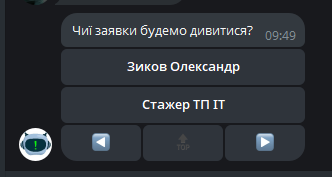

Ця функція дозволяє переглянути закриті та відхилені заявки користувача.
Порядок дій
Вибрати користувача, чий архів потрібно переглянути 
Після вибору користувача відображаються останні 3 заявки (з можливістю перегляду) з архіву та форма (не обов'язково заповнювати всі поля форми, все крім часу можна залишити в початковому вигляді)
Заповніть форму (так само, як і в ServiceDesk)
Вибір клієнта При спробі вибору клієнта, для початку необхідно ввести його назву (оскільки клієнтів багато і шукати їх у вигляді кнопок незручно) Після введення бот замість клавіатури покаже варіанти, які можна використовувати Після вибору клієнта - форма перемальовується і з'явиться вибір магазину
Вибір дати початку та кінця архіву (Необхідно вводити строго у вказаному форматі)
Вибір магазину ідентичний вибору клієнта (спочатку необхідно ввести частину назви, а потім вибрати із запропонованих варіантів)
Вибір типу заявки ідентичний вибору клієнта (спочатку необхідно ввести частину назви, а потім вибрати із запропонованих варіантів)
Очистити фільтр - очищає всі введені дані до стандартних значень
Застосувати фільтр - запускає пошук архіву за вказаними фільтрами. Після пошуку над формою з'являться відфільтровані заявки з можливістю перегляду